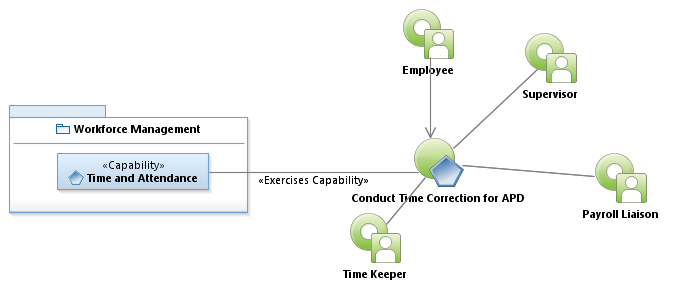
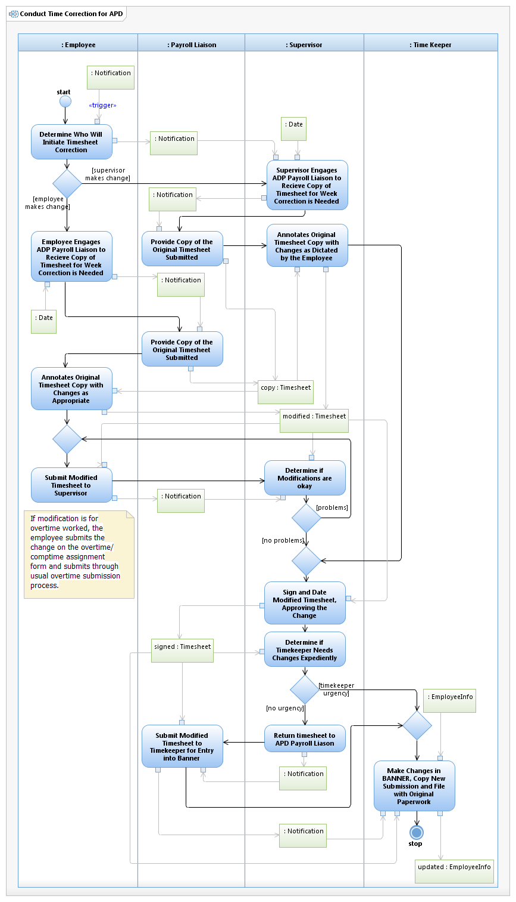

Use Case Model: Conduct Time Correction for APD
Architect: Aaron Brown, IT Enterprise Architect, Senior
Date Last Modified: 04/09/2013
User Review: Gregg Olson, Leticia Paredes
Date: 04/09/2013
Confirm time entry entry has been entered correctly within Banner.
Follow link to Role Definitions

Use Case Model: Conduct Time Correction for APD

Activity Model: Conduct Time Correction for APD
Activity Documentation
| Activity | Documentation |
|---|---|
| Determine Who Will Initiate Timesheet Correction | Timesheets are normally printed by the the Wednesday preceding the next pay period |
| Annotates Original Timesheet Copy with Changes as Dictated by the Employee | Supervisor will make the changes, and sign and date the corrected timesheet, along with accompanying documentation (leave request forms, etc.) Sworn are not required to submit Leave request forms. |
| Annotates Original Timesheet Copy with Changes as Appropriate | Employee will make the changes, and sign and date the corrected timesheet, along with accompanying documentation (leave request forms, etc.) Sworn are not required to submit Leave request forms. |
Note: When the activity is self explanatory no documentation is provided.